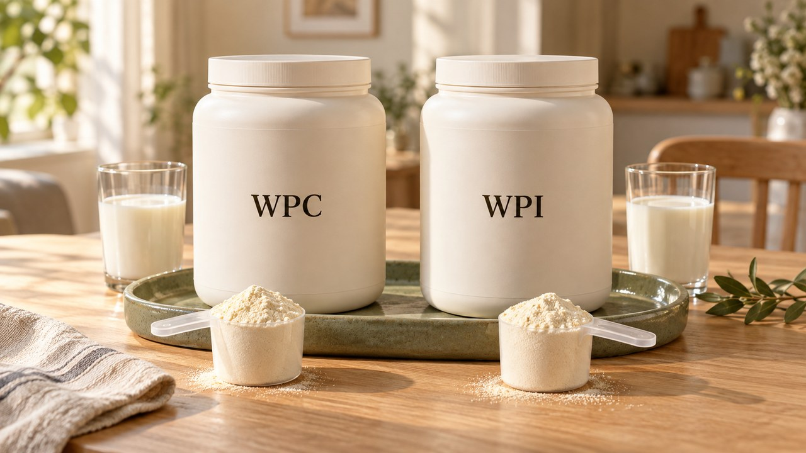
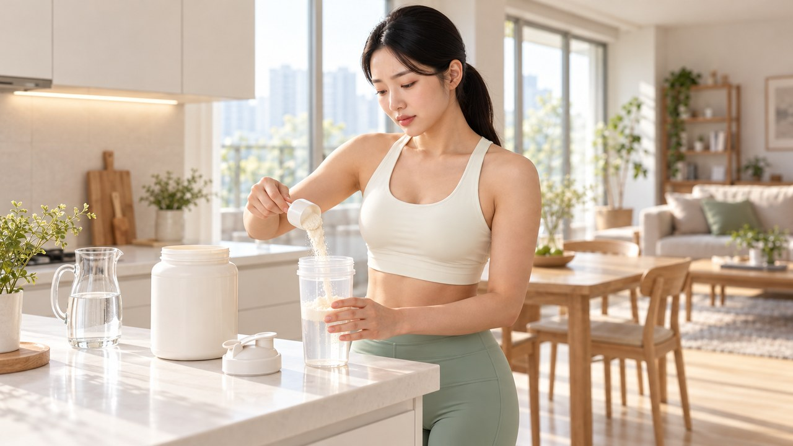
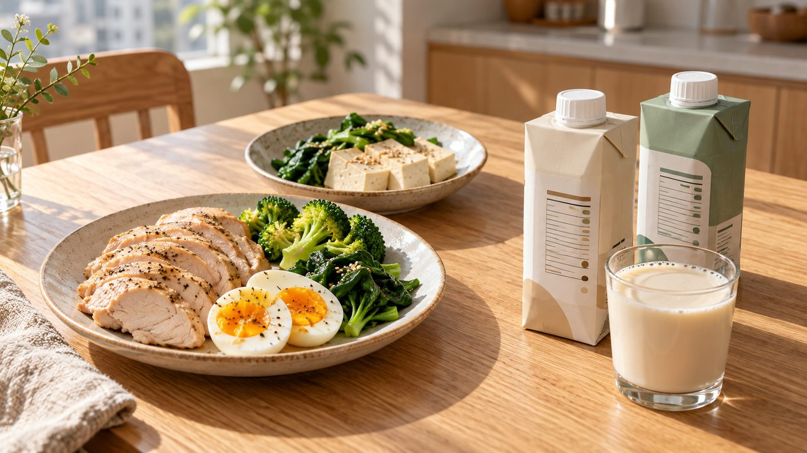

단백질보충제 WPC 고를 때 "가성비만 보고 샀더니 배가 아파요" 유당 민감한 장이 보내는 경고 신호
"운동 마치고 시원하게 한 컵 마셨는데
왜 자꾸 배에서 꾸르륵 소리가 날까요?"
용량 크고 금액 부담 없는 파우더를 골랐다가
화장실만 들락거린 경험 한 번쯤 있으시죠?
근육을 챙기려다 오히려 장부터 지친다면
아시아 성인 70~98%가 겪는 유당 소화 저하와
농축유청(WPC)의 원료 특성을 살펴야 합니다.

| 우유만 마시면 부글부글, 범인은 유당입니다
우유에서 치즈 성분을 빼고 남은 액체를 말린 것이
우리가 흔히 마시는 유청 파우더입니다.
체로 한 번만 거른 농축유청(WPC)은 단백질이
70~80% 수준이라 유당과 고소한 지방이 남아 있습니다.

찬 우유만 마셔도 배에서 신호가 오는 체질이라면
남은 유당이 소장을 지나 대장으로 내려가 버립니다.
장내 세균이 이를 발효시키며 가스를 부풀리고
수분을 끌어당겨 급한 설사를 부르는 것입니다.


반면 촘촘한 거름망으로 한 번 더 거른 분리유청(WPI)은
유당과 지방을 덜어내어 순도를 90% 이상 높인
유당 민감 체질 맞춤형 원료입니다.
단, 6주간 총량을 맞춘 운동 실험에서는 두 원료 사이에
뚜렷한 근력 상승 격차가 관찰되지 않았습니다.
| 분리유청 90% 순도, 어떻게 나눠 마실까요

혼밥이나 배달 식사 대신 귀찮다는 이유로
한 번에 두 스쿱씩 진하게 털어 넣는 분도 많습니다.
특별한 훈련을 안 하는 성인은 체중 1kg당 0.8~1.2g,
즉 60kg 기준 하루 48~72g이 권장됩니다.

끼니마다 약 20g 내외로 세 끼에 나눠 채워야
속이 한결 편안하고 식사 균형도 잡힙니다.
식탁 위 살코기나 생선 100g, 달걀 3개,
혹은 두부 한 모(300g)가 딱 끼니당 20g 분량입니다.
꾸준히 훈련하는 분은 체중 1kg당 1.4~2.0g(60kg이면 84~120g)을
분할 섭취 참고치인 1회 20~40g씩 3~4시간 간격으로 두고
미지근한 물 200~300mL에 천천히 녹여 드세요.

| 저당 음료의 반전, 이런 증상은 조심하세요

편의점 행사 매대에서 저당·제로 문구만 믿고
분리유청(WPI) 음료를 두 팩씩 연달아 마셔본 적 있으시죠?
식품 100g당 5g 미만·음료 100mL당 2.5g 미만인 저당이나
0.5g 미만 무당 음료엔 설탕 대신 감미료가 들어갑니다.

특히 일부 당알코올 성분을 개인 민감도 이상으로
한꺼번에 여러 팩 마시면 삼투성 설사가 날 수 있습니다.
보충제를 끊었는데도 설사가 2일 넘게 지속되거나
혈변·심한 복통·탈수가 동반된다면 즉시 점검을 받으세요.

오늘부터는 원료 표기 속 WPC와 WPI를 먼저 확인하고
빈속 원샷 대신 식후 한 스쿱 분할 습관을 시작해 보세요.
여러분은 평소 파우더 쉐이크로 단백질을 챙기시나요,
아니면 달걀과 두부 같은 자연 식단을 더 선호하시나요?
댓글로 여러분의 선택을 편하게 남겨주세요!

• 질병관리청 국가건강정보포털 (KDCA) — 성인 체중 1kg당 0.8~1.2g 단백질 권장량 및 끼니당 20g 분할 섭취 지침
• 식품의약품안전처 「식품등의 표시기준」 — 저당(100g당 5g 미만·100mL당 2.5g 미만)·무당(0.5g 미만)·무열량(100mL당 4kcal 미만) 표시 규격
• 보건복지부·한국영양학회 — 2025 한국인 영양소 섭취기준 (단백질 에너지 적정비율 10~20% 상향)
• 국제스포츠영양학회 (ISSN Position Stand, PMID: 28642676) & Cell Reports Medicine (PMID: 38118410)
• Journal of the American Nutrition Association (PMID: 42345379) & J Sports Med Phys Fitness (PMID: 32141277)
#단백질보충제 #WPC #분리유청단백질 #단백질음료 #단백질음식 #유당불내증 #단백질하루섭취량 #운동후단백질 #혼밥식단 #저당단백질 #에디터혀니 #혀니의꿀단지